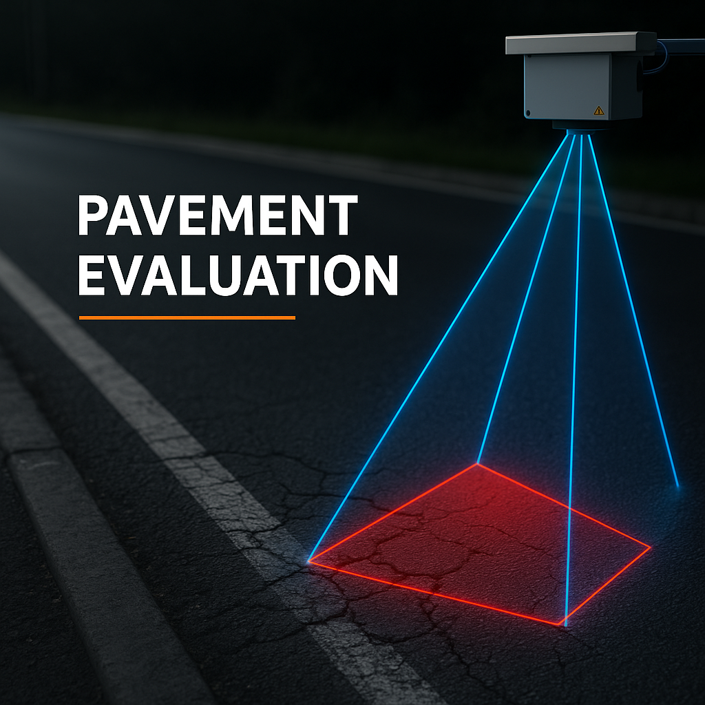

Functional and Structural evaluation of pavement, Soil and Geotechnical Investigation,
Traffic and Transportation Studies, Geometric design of Highway, Design of pavement
and Structures, Pavement overlay designs, Non-destructive testing, Road Safety Audits
and Other Third-Party Inspection.
Pavement Evaluation
Network Survey Vehicle (NSV)
Falling Weight Deflectometer (FWD) / HWD
Airport PCN Evaluation
Roughness Survey (5th Wheel Bump Integrator)
Benkelman Beam Deflection Survey (BBD Test)
Roughness by Laser Profilometer
Retroreflectometer Testing for Sign Boards and Lane Marking
Skid Resistance Test

Transportation Engineering
Automatic Traffic Counter & Classifier (ATCC)
Classified Volume Count Survey (CVC)
Video-based Traffic Counter & Classifier
Videos processed using AI algorithms
Axle Load Surveys
Origin–Destination Survey (O-D)
Turning Movement Count Survey (TMC)
Mobile Bridge Inspection Unit (MBIU)
Soil & Geotechnical Investigation
Trial Pit Survey
Material Investigation (Aggregate & Borrow Area)
Field CBR by Dynamic Cone Penetration Test
Field Dry Density by Core Cutter Method
Field Dry Density by Sand Replacement Method
Field Moisture Content by Rapid Moisture Meter
Soil Testing Services
Coarse & Fine Aggregate Testing
Data Analysis and Interpretation
Navgati offers quality analysis and interpretation of test data collected from highly
intellectual software-integrated equipment, which gives the most statistical analysis
report to maintain the condition of Pavement Maintenance Management System and
road safety audit related studies.